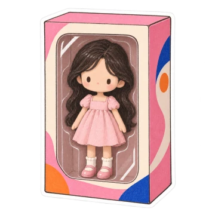
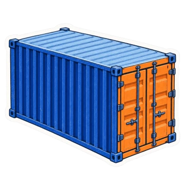

LeLe Films
Drag a sticker anywhere around the page. With a sticker focused, use arrow keys to move it, Shift for larger steps, or Escape to put it back.


LeLe Films is an NYC-based production company founded by filmmaker Elena Lecun Xiang.
Small things. Stories behind them.Pick one up.